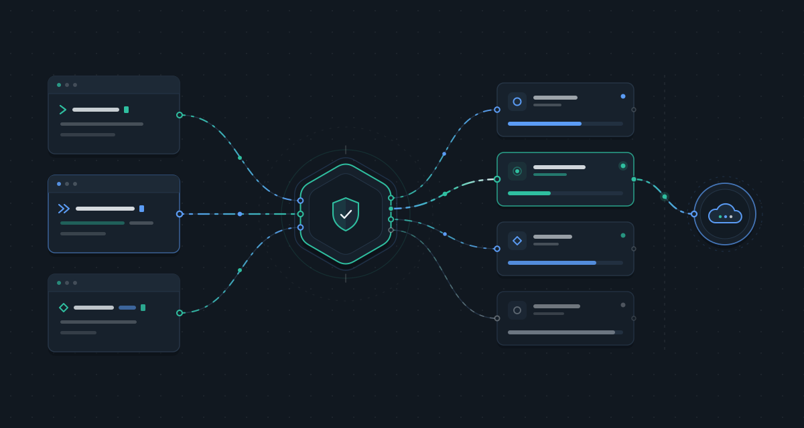

多账号集中管理
同一个 CLI 的多个 OAuth / API Key 账号放在一个地方：编号、额度、状态、登录与删除都在 CLI 和 WebUI 里完成，不需要来回复制配置目录。
AI Home（aih）在一台机器上管理 codex、claude、gemini、agy 等 16 个 AI CLI 的多个账号，内置 OpenAI / Anthropic / Gemini 兼容网关，并提供 WebUI、持久会话与 MCP 选择。默认只监听 127.0.0.1。
aih server start→http://127.0.0.1:9527/ui/凭据留在本机 · 会话留在各工具原生目录 · 不依赖云端账号池

Why
不是再做一个聊天客户端。AI Home 管理的是你已经装好的 CLI、已经登录的账号，以及它们共用的本机环境。
同一个 CLI 的多个 OAuth / API Key 账号放在一个地方：编号、额度、状态、登录与删除都在 CLI 和 WebUI 里完成，不需要来回复制配置目录。
codex / claude 等裸启动默认走内置网关：按剩余额度加权选号，429 与额度耗尽按（账号, 模型）熔断，模型别名可以配置优先级与降级。
账号之间只隔离凭据；会话、历史和工具缓存仍在各工具自己的目录里。关终端、断 SSH 不掉线，换账号也能接着原来的对话。
How
下面用一个最小的真实流程说明；所有命令与 WebUI 都是当前系统已有的入口，没有演示专用的假功能。
aih server status 可以随时查看状态。aih codex login，或在 WebUI「账号管理」里登录、导入、扫描本机账号。每个账号的凭据只写进它自己的投影目录。aih codex 走网关账号池；aih codex 3 指定 3 号账号；aih resume 跨工具续接会话。WebUI 负责看状态、改配置和排查问题。它在同一个 Server 上完成 CLI 不容易做的事：看每个账号的额度与探测状态、编辑模型别名与出口、管理 MCP 启用范围、查看会话与用量、切换远程 Server。
本页的账号数据是示意值，不包含任何真实账号信息。
Architecture
CLI 和 WebUI 都连本机同一个 Go Server；Server 持有账号凭据索引、模型路由和会话选择，实际请求仍发往各 provider 的官方接口。
每个账号的目录里只放该账号的登录态。会话、历史、设置和工具缓存共用一份，换账号不会让历史“消失”。
OpenAI（/v1）、Anthropic（/v1/messages）、Gemini（/v1beta）。外部工具把 base_url 指向本机 Server 即可。
CLI 会话跑在 tmux 里；aih resume 跨 provider 选一段会话继续，aih <cli> fork 从最近一段分叉。
Capabilities
只列已经在代码和真机上验证过的能力；细节与完整命令见仓库 README。
OAuth / API Key 账号、导入导出、扫描本机登录态、额度探测、启用/停用、默认账号、按账号打开桌面端或终端。
剩余额度加权选号、（账号, 模型）熔断、模型别名 fallback、单次会话的 --model-alias 改写、图片生成与编辑接口。
aih ss、resume、fork、具名会话、接管/镜像、空闲回收；关终端和断 SSH 不丢。
仪表盘、账号管理、AI 会话、用量、模型目录、开发工具、Server 管理、SSH 开发机；移动端也有独立布局。
账号级 auto / allowlist / disabled，会话级 --mcp / --no-mcp / --mcp-profile / --mcp-status；注册表选择、Tab 补全与共享桥（global / workspace / off）。
多 Server 切换、Workspace Connector 把本机目录暴露给远程会话、SSH 开发机、入口转发配置（frp / nginx / caddy）。
zsh / bash / fish / PowerShell 补全与拼写纠正；aih codex --mcp <TAB>、resume <TAB> 这类位置感知补全。
WebUI 内完成 OAuth 登录，按账号隔离 Profile 与 Cookie；macOS 由 AI Home.app 统一持有一次屏幕录制/辅助功能授权。
Limits
这些不是“以后会做”，而是当前系统的真实边界。写清楚比夸大更有用。
127.0.0.1:9527。要跨设备使用，需要自己通过 HTTPS、VPN 或受控隧道暴露，并保管好 Management Key。~/.ai_home，登录态写进各账号的投影目录；AI Home 不托管云端账号池，也不绕过 provider 的条款与风控。Start
推荐使用对应平台的单文件安装包；也可以从源码构建。安装包自带运行时与构建好的 WebUI。
# 从源码（开发） npm install npm link aih server start # 或下载 release 单文件后 chmod +x aih-<version>-<target>.run ./aih-<version>-<target>.run
启动 Server 后，用 CLI 添加账号即可；WebUI 在同一端口。
aih server start aih codex login # 或 aih claude login aih ls # 看账号与状态 aih codex # 走 AIH Server 账号池 aih codex 1 # 指定 1 号账号 aih resume # 跨 provider 续接会话 # 用浏览器打开 http://127.0.0.1:9527/ui/
WebUI 与管理接口需要 Management Key；首次使用按 aih server config show 的提示配置。